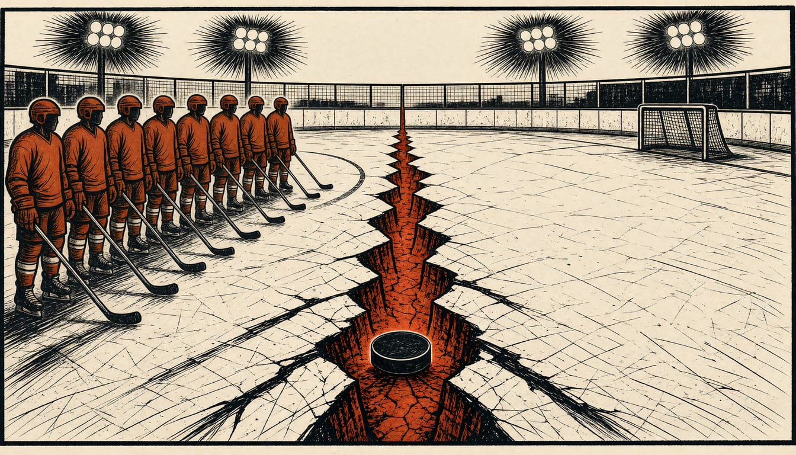

Court orders Russian hockey teams back. Finland and Latvia refuse to play
The ruling covers all tournaments, including the 2027 World Championship in Germany. Foreign Minister Elina Valtonen says she will move to block Russian athletes from entering Finland.

The Court of Arbitration for Sport ruled on 30 October that the IIHF must readmit Russian teams, including for the 2027 Men's World Championship in Germany. Heikki Hietanen, head of Leijonat, Finland's national ice hockey team, said Finland will not play Russia as long as its war of aggression against Ukraine goes on. The International Ice Hockey Federation (IIHF) said putting the ruling into effect will take time and urgent planning.
The ruling covers all IIHF championships: the 2027 Men's and Women's World Championships, the World Junior Championship and the U18 Championships. The IIHF said it would comply with the court's decision, though with disappointment. It maintained that its exclusions were necessary to protect the safety of all participants and safeguard competition integrity. The federation recognised the court's authority. It warned that Russia's return would affect tournament arrangements, schedules, travel planning and security work.
Hietanen stated the line on the federation's own site. The Latvian federation holds this position through Secretary General Roberts Plavejs. He told LSM: "The sports law states clearly that national teams cannot play against the teams of Russia or Belarus. We will not in any case break these rules." Finnish Foreign Minister Elina Valtonen said on 1 November that Russian athletes will have no business coming to Finland if the war continues. She said she will advance the necessary measures in the coming days to block their entry.
Germany's own federation does not want Russia back. Frank Lutz, head of the German Ice Hockey Federation, opposes the return of the Russian national teams. He said this clearly to the CAS council and hearings. Russia would return, whenever it does, to the level it was at: the top group for men's ice hockey. Ukraine was the last team to qualify up. Anders Larsson said that could mean Ukraine is pushed out of the World Cup.
The IIHF board began a two-day meeting on Monday, 2 November, with Russia as its main topic. The federation said the court ruling ignored practicalities: tournaments are already far along in preparation, and the IIHF will urgently work out the steps and time the ruling needs.